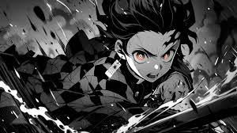

DEMON SLAYER



DRAGON BALL


 is the God of Destruction of Universe 7. He is accompanied by his martial arts teacher and attendant, Whis. Beerus' twin brother is Champa, the God of Destruction of Universe 6.")


BLUE LOCK


 is one of the main protagonists of the Jujutsu Kaisen series. He is a special grade jujutsu sorcerer and widely recognized as the strongest in the world. Satoru is the pride of the Gojo Clan, the first person to inherit both the Limitless and the Six Eyes in four hundred years. He works as a teacher at the Tokyo Jujutsu High and uses his influence to protect and train strong young allies.")
, more often referred to as simply Sukuna (宿すく儺な Sukuna?), is the strongest jujutsu sorcerer from over a thousand years ago. Regarded as the undisputed King of Curses (呪のろいの王おう Noroi no Ō?), Sukuna is one of the primary antagonists of the Jujutsu Kaisen series.")
 is a major supporting character in Jujutsu Kaisen. He was a former student of Tokyo Jujutsu High where he was an underclassman of Satoru Gojo and Suguru Geto. Nanami initially left Jujutsu High after graduating to become a salaryman, but returned four years later to continue working as a jujutsu sorcerer.")
 is the main protagonist of the Jujutsu Kaisen series. He is the son of Jin Itadori and Kaori Itadori, and the grandson of Wasuke Itadori. Yuji was living a normal life in Sendai City until he encountered Megumi and ate one of Sukuna's fingers. After becoming Sukuna's vessel, Yuji began attending Tokyo Jujutsu High alongside Megumi and Nobara as first-year students.")
, born Toji Zenin (禪ぜん院いん甚とう爾じ Zen'in Tōji?) is a recurring character in the Jujutsu Kaisen series. He was a former member of the Zenin clan and the infamous assassin known as the Sorcerer Killer (術じゅつ師し殺ごろし Jutsushi Goroshi?), contracted by the Time Vessel Association among other groups throughout his time as a non-curse user. He was also the father of Megumi Fushiguro and former enemy of Satoru Gojo. While working for the Star Religious Group, Toji serves as the primary antagonist of the Gojo's Past Arc.")
 is an antagonist in both the Jujutsu Kaisen series and its prequel Jujutsu Kaisen 0: Jujutsu High. He was originally a student of Masamichi Yaga's alongside Satoru Gojo and Shoko Ieiri at Tokyo Jujutsu High. His experiences as a jujutsu sorcerer bred a deep hatred for non-sorcerers, leading to an incident where Suguru massacred over a hundred civilians in a single night. He was expelled from Jujutsu High and came to be known as the worst of all curse users.")


 is the 15th and current commander (団長 Danchō?) of the Survey Corps, named so by Hange Zoë before their death.[10] He is also a childhood friend of Eren Yeager and Mikasa Ackerman, and one of the two deuteragonists of the series. Although he appears to be among the physically weakest of the 104th Training Corps, his intelligence and strategic genius makes him an invaluable asset, especially when paired with Hange. After the battle of Shiganshina District, he took the power of the Titans from Bertolt Hoover and came in possession of the Colossus Titan.")

 is a shinobi of Konohagakure's Uzumaki clan. He became the jinchūriki of the Nine-Tails on the day of his birth — a fate that caused him to be shunned by most of Konoha throughout his childhood.")
 is one of the last surviving members of Konohagakure's Uchiha clan. After his older brother, Itachi, slaughtered their clan,")
 was a member of Konohagakure's Uchiha clan. He was believed to have died during the Third Shinobi World War, his only surviving legacy being the Sharingan he gave to his teammate, Kakashi Hatake. In truth, Obito was saved from death and trained by Madara, but the events of the war left Obito disillusioned with reality, and he inherited Madara's plan to create an ideal world. Resurfacing under the names of Tobi (トビ, Tobi) and Madara Uchiha himself, Obito subtly took control of the Akatsuki, using them as a means to advance his machinations, eventually going public and starting the Fourth Shinobi World War. However, towards the war's conclusion, Obito had a change of heart and, as atonement, sacrificed his life to save the same world he sought to replace.")
 was the legendary leader of the Uchiha Clan. He founded Konohagakure alongside his childhood friend and rival, Hashirama Senju, with the intention of bringing about an era of peace. When the two couldn't agree on how to achieve that peace, they fought for control of the village, a conflict which ended in Madara's death. Madara, however, rewrote his death and went into hiding to work on his own plans. Unable to complete it in his natural life, he entrusted his knowledge and plans to Obito Uchiha shortly before his actual death. Years later, Madara would be revived, only to see his plans ultimately foiled. Finally, realising the error of his ways, he made amends with Hashirama before his final death.")
 was a shinobi of Konohagakure's Uchiha clan who served as an Anbu Captain. He later became an international criminal after murdering his entire clan, sparing only his younger brother, Sasuke. He afterwards joined the international criminal organisation known as Akatsuki, whose activity brought him into frequent conflict with Konoha and its ninja — including Sasuke who sought to avenge their clan by killing Itachi. Following his death, Itachi's motives were revealed to be more complicated than they seemed and that his actions were only ever in the interest of his brother and village, making him remain a loyal shinobi of Konohagakure to the very end.")
) is a kunoichi of Konohagakure. Formerly the heiress of the Hyūga clan, she lost the position upon being deemed unsuited for the responsibilities of leading the clan. Nonetheless, Hinata persevered and from her observation of Naruto Uzumaki especially, Hinata found an example to follow. Through her membership with Team 8, she sought to become strong enough to change herself, if even a little at a time. A few years after the Fourth Shinobi World War, Hinata joined the Uzumaki clan after marrying Naruto.
Contents")